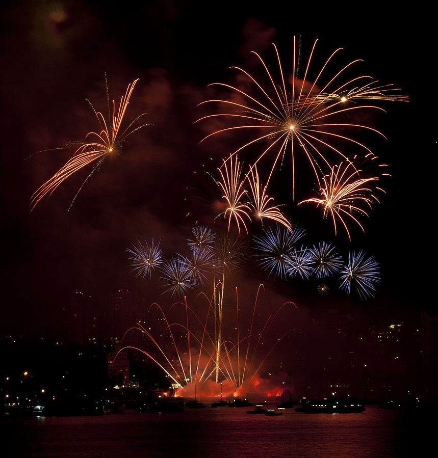
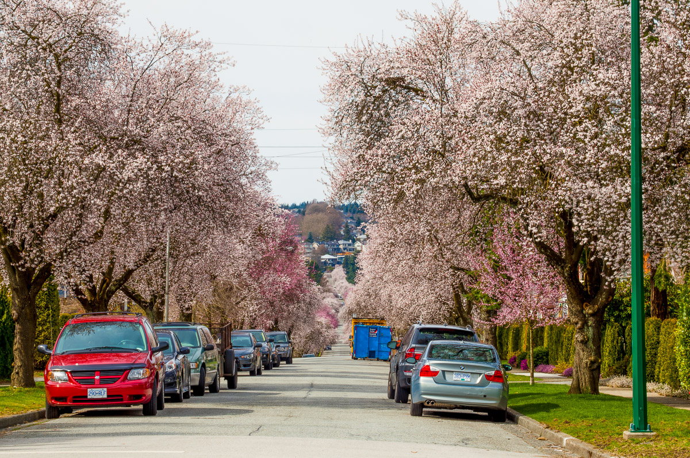

One of the most important aspects of a trip is figuring out your itenerary. Let us help by providing
some events that your party may want to attend.
The Celebration of Light is a large highly celebrated event held in Vancouver on July 27th

The Vancouver Cherry Blossom Festival is a large festival held between April 4th and April 28 to celebrate the beauty of Vancouver's cherry blossom trees

Not going to be in Vancouver around those times? Search below for events that will be happening during your trip.